These are all the equipment and first missiles, super missles, and power bombs in the order you get them and where to get them and how to use them (it has when you have to beat the bosses included).
Morphing Ball
-Brinstar: To the left of the bottom of the first Crateria/Brinstar elevator
---To use press down twice First Missiles
-Brinstar: To the right of the botton of the first Crateria/Brinstar elevator 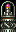
---Press select to turn on missiles, and use the fire button (x) to shoot Bomb
-Crateria: At the chozo statue in crateria 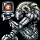
---To use, press the fire button (x) while in a ball Chozo Statue
-Crateria: Right After you get the bomb he'll come to life Charge Beam
-Brinstar: The Lower left part of the big room 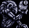
---Hold the fire button(x) to build up a charge and release it to shoot Spore Spawn
-Brinstar: He's at the very top and to the right of the tall shaft in Brinstar First Super Missiles
-Brinstar: At the bottom of the shaft after Spore Spawn
---Press select twice to turn on super missiles, and use the fire button (x) to shoot High Jump Boots
-Norfair: Lowest left room of first long shaft 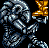
---These will automatically be on. To turn them on or off, press start and then the R button to access the Samus set-up screen Spazer
-Brinstar: Above the room left of the Maridia tubes. 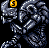
---This will automatically be on. To turn it on or off, press start and then the R button to access the Samus set-up screen Kraid
-Brinstar: To the right of the top of the Brinstar/Norfair elevator Varia Suit
-Brinstar: The room right next to Kraid
---This allows you to go into hot rooms without getting hurt. It will automatically be on, but to turn it on or off, press start and then the R button to access the Samus set-up screen Speed booster
-Norfair: Go throught the top right door in the bubble room 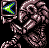
---This allows you to break speed booster blocks. To use find a long stretch and hold B while running Ice beam
-Norfair: The first door on the left in the first long shaft
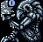
---This allows you to freeze enemies. It will automatically be on, but to turn it on or off, press start and then the R button to access the Samus set-up screen First Power Bombs
-Brinstar: The top door on the long red shaft and through the spikey room
---Press select 3 times to turn power bombs on, then press the fire button (x) while in a ball Crocomire
-Norfair: Power Bomb the room before you get the ice beam (the one with the gates) and it will lead you to Crocomire Grappling beam
-Norfair: Do a long power jump in the long room after Crocomire 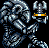
---Press select 4 times to turn it on, then press and hold the fire button (x) to use Wave beam
-Norfair: Grapple to the right across the spiked room (near the bubble room) 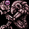
---This will automatically be on. To turn it on or off, press start and then the R button to access the Samus set-up screen X-Ray scope
-Brinstar: Grapple left across the spiked room (near the bottom of the long shaft) 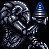
---Press select 5 times to turn on, then press and hold the fire button (x) to use Phantoon
-Wrecked Ship: In the bottom right corner Gravity Suit
-Wrecked Ship: Roll into a ball on the chozo's hand
---This allows you to jump and run under water. It will automatically be on, but to turn it on or off, press start and then the R button to access the Samus set-up screen Botwoon
-Maridia: To the right of the first fake metroid room Draygon
-Maridia: The room farest to the right Space Jump
-Maridia: The room to the left of Draygon 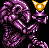
---To space jump, you have to do a spin jump (jump while pressing the over button). At the peak of the jump, press the jump button again to jump up higher. If you wait too long and start falling it will be hard to continue the space jump. It takes some practice to learn the timing and is easiest to do when you're going sideways. When trying to go up, it easiest to do it next to a wall. Plasma Beam
-Maridia: In the highest room 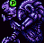
---It will automatically be on, but to turn it on or off, press start and then the R button to access the Samus set-up screen. Note, you can't have both the plasma and wave beam on at the same time. Spring Ball
-Maridia: Go down the tube and go to the far right 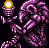
---To use this, press jump while in a ball Golden Chozo
-Norfair: Go to the left after the elevator to Ridely's Lair Screw Attack
-Norfair: Go through the door to the right after the Golden Chozo 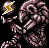
---This allows you to kill enemies and break blocks while space jumping. It will automatically be on, but to turn it on or off, press start and then the R button to access the Samus set-up screen Ridley
-Norfair: The lowest part on the right side Mother Brain
-Tourain: Follow the path through Tourain